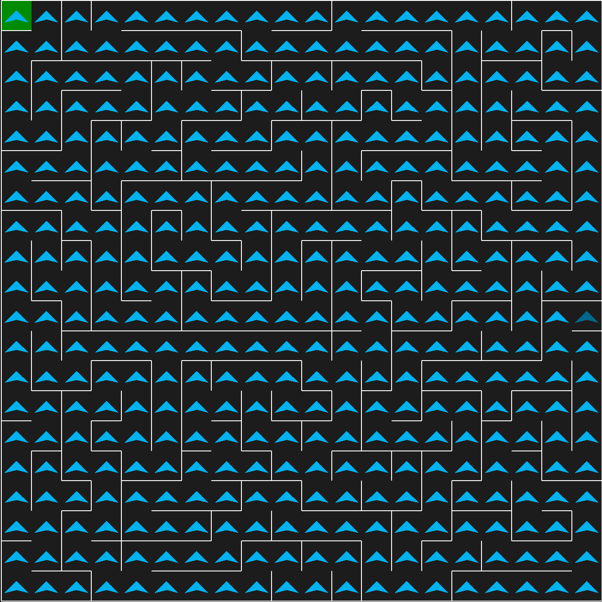

Mapping
In order to utilising the left-hand following algorithm in order to research every single cell on the maze. You would need to first setup a Pyamaze maze and call the method "research_maze" and pass the generated maze map and provide starting cell of the maze.
This method will return a list of tuples which will contain each cell that the algorithm has mapped.
"""Solving the maze
Contains functionality to navigate a maze.
"""
from typing import Dict, List, Tuple
def rotate_agent_clockwise(agent_direction: dict[str, str]) -> Dict:
"""Rotates agent's direction clockwise 90 degrees.
Args:
agent_direction: Direction of the maze agent.
Returns:
An updated agent's direction.
"""
keys = list(agent_direction.keys())
values = list(agent_direction.values())
values_rotated = [values[-1]] + values[:-1]
return dict(zip(keys, values_rotated))
def rotate_agent_anticlockwise(agent_direction: dict[str, str]) -> Dict:
"""Rotates agent's direction anticlockwise -90 degrees.
Args:
agent_direction: Direction of the maze agent.
Returns:
An updated agent's direction.
"""
keys = list(agent_direction.keys())
values = list(agent_direction.values())
values_rotated = values[1:] + [values[0]]
return dict(zip(keys, values_rotated))
def move_agent_forward(
position: tuple[int, int], direction: dict[str, str]
) -> Tuple[int, int]:
"""Calculate the position which the agent should visit.
Args:
position: The position of the agent
direction: The path options for the agent
Returns:
An updated position which the agent should visit next.
"""
forward_direction = direction["forward"]
if forward_direction == "E":
return tuple([position[0], position[1] + 1])
if forward_direction == "W":
return tuple([position[0], position[1] - 1])
if forward_direction == "N":
return tuple([position[0] - 1, position[1]])
if forward_direction == "S":
return tuple([position[0] + 1, position[1]])
return position
def research_maze(
maze_map: dict[tuple[int, int], dict[str, str]],
start_position: tuple[int, int],
) -> List:
"""Research the whole maze to find the available paths
Args:
maze_map: Each cells contains information about the status
of which path is either opened or closed.
start_position: The starting position of the maze.
Returns:
A maze with all its possible cells visited.
"""
if len(maze_map) < 1:
return []
agent_direction = {
"forward": "N",
"left": "W",
"back": "S",
"right": "E",
}
researched_maze = [start_position]
agent_position = start_position
while True:
# removing the starting position from maze map
if len(researched_maze) == len(maze_map):
break
if maze_map[agent_position][agent_direction["left"]] == 0:
if maze_map[agent_position][agent_direction["forward"]] == 0:
agent_direction = rotate_agent_clockwise(agent_direction)
else:
agent_position = move_agent_forward(
agent_position, agent_direction
)
else:
agent_direction = rotate_agent_anticlockwise(agent_direction)
agent_position = move_agent_forward(
agent_position, agent_direction
)
if agent_position not in researched_maze:
researched_maze.append(agent_position)
return researched_maze
Screenshot of the completed mapping: 